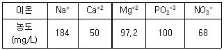
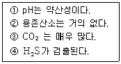
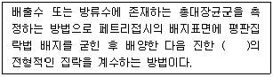
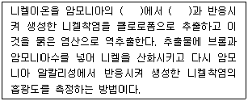
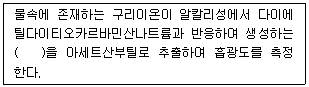
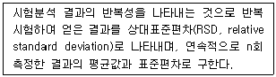
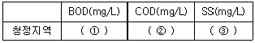
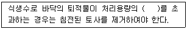
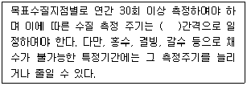

수질환경산업기사 (2013-06-02 기출문제)
1과목: 수질오염개론
1. 박테리아(분자식 : C5H7O2N) 50g의 호기성 분해 시 이론적 소요 산소량은? (단, CO2, NH3, H2O로 분해됨)
- 52.6g
- 65.3g
- 70.8g
- 87.8g
(정답률: 83%)

2. BOD가 4mg/L이고, 유량이 1,000,000m3/day인 하천에 유량이 10,000m3/day인 폐수가 유입되었다. 하천과 폐수가 완전히 혼합되어진 후 하천의 BOD가 1mg/L 높아졌다면, 하천에 가해지는 폐수의 BOD부하량(kg/day)은? (단, 기타사항은 고려하지 않음)
- 460
- 610
- 8⑤
- 1⑤0
(정답률: 81%)
3. 어느 1차 반응에서 반응개시의 물질농도가 220mg/L이고 반응 1시간 후의 농도는 94mg/L이었다면 반응 8시간 후의 물질의 농도는?
- 0.12mg/L
- 0.25mg/L
- 0.36mg/L
- 0.48mg/L
(정답률: 75%)
4. 우리나라 물이용 형태에서 볼 때 수요가 가장 많은 분야는?
- 공업용수
- 농업용수
- 유지용수
- 생활용수
(정답률: 100%)
5. 0.25M MgCl2 용액의 이온강도는? (단, 완전해리 기준)
- 0.45
- 0.55
- 0.65
- 0.75
(정답률: 80%)
6. 용존산소의 포화농도가 9mg/L인 하천의 상류에서 용존산소 농도가 6mg/L이라면 (BOD5가 5mg/L, K1=0.1day-1, K2=0.4day-1) 5일 후의 하류에서의 DO부족량(mg/L)은? (단, 상용대수 기준, 기타 조건은 고려하지 않음)
- 약 0.8
- 약 1.8
- 약 2.8
- 약 3.8
(정답률: 40%)
7. 어떤 하천의 물을 농업용수로 적당한가를 알아보기 위하여 수질분석한 결과는 다음과 같다. 이 하천의 Sodium Adsorption Ratio는? (단, 원자량은 Na=23, Ca=40, Mg=24.3, P=31, N=14, O=16)

- 1.5
- 2.5
- 3.5
- 4.5
(정답률: 77%)
8. 산성비를 정의할 때 기준이 되는 수소이온농도(pH)는?
- 4.3
- 4.5
- 5.6
- 6.3
(정답률: 97%)
9. 분뇨 처리 후 방류수 잔류염소를 3mg/L로 하고자 한다. 하루 방류수 유량이 1,600m3이고 염소요구량이 4mg/L이라면 염소는 하루에 얼마나 필요(주입)한가?
- 8.6kg/day
- 11.2kg/day
- 14.3kg/day
- 18.6kg/day
(정답률: 87%)
10. 개미산(HCOOH)의 ThOD/TOC의 비는?
- 1.33
- 2.14
- 2.67
- 3.19
(정답률: 91%)
11. 하천에서 유기물 분해상태를 측정하기 위해 20℃에서 BOD를 측정했을 때 K1=0.2/day이었다. 실제 하천온도가 18℃일 때 탈산소계수는? (단, 온도보정계수는 1.035이다.)
- 약 0.159/day
- 약 0.164/day
- 약 0.172/day
- 약 0.187/day
(정답률: 85%)
12. 물의 물리화학적 특성에 관한 설명으로 틀린 것은?
- 물은 기화열이 작기 때문에 생물의 효과적인 체온조절이 가능하다.
- 물(액체)분자는 H+와 OH-의 극성을 형성하므로 다양한 용질에 유효한 용매이다.
- 물은 광합성의 수소공여체이며 호흡의 최종산물로서 생체의 중요한 대사물이 된다.
- 물은 융해열이 크기 때문에 생물의 생활에 적합한 매체가 된다.
(정답률: 96%)
13. 물 1L에 NaOH 0.04g을 녹인 용액의 pH는? (단, Na : 23, 완전 해리 기준)
- 9
- 10
- 11
- 12
(정답률: 86%)
14. BODu/BOD5의 비가 1.72인 경우의 탈산소계수(day-1)는? (단, base는 상용대수임)
- 0.⑤6
- 0.066
- 0.076
- 0.086
(정답률: 66%)
15. 여름철 부영양화된 호수나 저수지에서 다음과 같은 조건을 나타내는 수층으로 가장 적절한 것은?

- 성층
- 수온약층
- 심수층
- 혼합층
(정답률: 92%)
16. 0.⑤N의 약산인 초산이 16% 해리되어 있다면 이 수용액의 pH는?
- 2.1
- 2.3
- 2.6
- 2.9
(정답률: 80%)
17. K1(탈산소계수)가 0.1/day인 어떤 폐수의 BOD5가 500mg/L이라면 2일 소모 BOD는? (단, 상용대수 기준)
- 220mg/L
- 250mg/L
- 270mg/L
- 290mg/L
(정답률: 73%)
18. 6%의 NaCl의 M농도는? (단, NaCl 분자량=58.5, 비중 1.0 기준)
- 0.61M
- 0.83M
- 1.03M
- 1.26M
(정답률: 82%)
19. 0.01M NaOH 500mL를 완전히 중화시키는데 소요되는 0.1N H2SO4량은?
- 10mL
- 25mL
- 50mL
- 100mL
(정답률: 87%)
20. 표준상태에서 45g의 포도당(C6H12O6)이 혐기성 분해 시 이론적으로 발생 시킬 수 있는 CH4가스의 부피는?
- 16.8L
- 19.6L
- 24.3L
- 28.6L
(정답률: 83%)
2과목: 수질오염방지기술
21. 8kg glucose(C6H12O6)로부터 발생 가능한 CH4가스의 용적은? (단, 표준상태, 혐기성 분해 기준)
- 약 1,500L
- 약 2,000L
- 약 2,500L
- 약 3,000L
(정답률: 65%)
22. 2,000m3/day의 하수를 처리하고 있는 하수처리장에서 염소처리시 염소요구량이 5.5mg/L이고 잔류염소농도가 0.5mg/L일 때 1일 염소 주입량은? (단, 주입염소에는 40% 불순물이 함유되어 있다.
- 10kg/day
- 15kg/day
- 20kg/day
- 25kg/day
(정답률: 71%)
23. 펜톤(Fenton)반응에서 사용되는 과산화수소의 용도는?
- 응집제
- 촉매제
- 산화제
- 침강촉진제
(정답률: 80%)
24. 표준활성슬러지법의 MLSS농도의 표준 범위로 가장 옳은 것은?
- 1,000 ~ 1,500mg/L
- 1,500 ~ 2,500mg/L
- 2,500 ~ 3,500mg/L
- 3,500 ~ 4,500mg/L
(정답률: 91%)
25. 5℃의 수중에 동일한 직경을 가지는 기름방울 A와 B가 있다. A의 비중은 0.84, B의 비중은 0.98일 때 A와 B의 부상속도비(VA/VB)는?
- 2
- 4
- 6
- 8
(정답률: 66%)
26. 폭기조 용액을 1L 메스실린더에서 30분간 침강시킨 침전슬러지 부피가 500mL이었다. MLSS농도가 2,500mg/L라면 SDI는?
- 0.5
- 1
- 2
- 4
(정답률: 80%)
27. 활성슬러지법에 의한 폐수처리의 운전 및 유지관리상 가장 중요도가 낮은 사항은?
- 포기조 내의 수온
- 포기조에 유입되는 폐수의 용존산소량
- 포기조에 유입되는 폐수의 pH
- 포기조에 유입되는 폐수의 BOD 부하량
(정답률: 75%)
28. 슬러지의 함수율이 95%에서 90%로 줄어들면 슬러지의 부피는? (단, 슬러지 비중은 1.0)
- 2/3로 감소한다.
- 1/2로 감소한다.
- 1/3로 감소한다.
- 3/4로 감소한다.
(정답률: 96%)
29. 잉여슬러지의 농도가 10,000mg/L일 때 포기조 MLSS를 2,500mg/L로 유지하기 위한 반송비는? (단, 기타 조건은 고려하지 않음)
- 0.23
- 0.33
- 0.43
- 0.53
(정답률: 84%)
30. BOD 300mg/L인 폐수를 20℃에서 살수여상법으로 처리한 결과 유출수 BOD가 60mg/L로 되었다. 이 폐수를 10℃에서 처리한다면 유출수의 BOD는? (단, 처리효율 Et = E20 × 1.035T-20이다.)
- 110mg/L
- 130mg/L
- 150mg/L
- 170mg/L
(정답률: 67%)
31. 혐기성 소화조 운전 중 소화가스 발생량이 저하되었다. 그 원인과 가장 거리가 먼 것은?
- 조내 온도저하
- 저농도 슬러지 유입
- 소화슬러지 과잉배출
- 과다교반
(정답률: 62%)
32. 진공여과기로 슬러지를 탈수하여 함수율 78%의 탈수 cake을 얻었다. 여과면적은 30m2, 여과속도는 25kg/m2·hr이라면 진공여과기의 시간당 cake생산량은? (단, 슬러지의 비중은 1.0으로 가정한다.)
- 약 2.8m3/hr
- 약 3.4m3/hr
- 약 4.2m3/hr
- 약 5.3m3/hr
(정답률: 57%)
33. 슬러지 건조고형물 무게의 1/2이 유기물질, 1/2이 무기물질이며 이 슬러지 함수율은 80%, 유기물질 비중은 1.0, 무기물질 비중은 2.5라면 슬러지 전체의 비중은?
- 1.025
- 1.046
- 1.064
- 1.087
(정답률: 50%)
34. 다음의 생물학적 고도처리 공정 중 수중 인의 제거를 주목적으로 개발한 공법은?
- 4단계 Bardenpho 공법
- 5단계 Bardenpho 공법
- A2/O 공법
- A/O 공법
(정답률: 89%)
35. 하수 소독 방법인 UV살균의 장점과 가장 거리가 먼 것은?
- 유량과 수질의 변동에 대해 적응력이 강하다.
- 접촉시간이 짧다.
- 물의 탁도나 혼탁이 소독효과에 영향을 미치지 않는다.
- 강한 살균력으로 바이러스에 대해 효과적이다.
(정답률: 76%)
36. 부피 2,000m3인 탱크의 G값을 50/sec로 하고자 할 때 필요한 이론 소요동력(W)는? (단, 유체 점도는 0.001kg/m·sec)
- 3,500
- 4,000
- 4,500
- 5,000
(정답률: 80%)
37. 지름이 20m이고, 깊이가 5m인 원형침전지에서 BOD 200mg/L, SS 240mg/L인 하수 4,000m3/day를 처리할 때 침전지의 수면적 부하율은?
- 2.7m/day
- 12.7m/day
- 23.7m/day
- 27.0m/day
(정답률: 77%)
38. 폐수에 포함된 15mg/L의 난분해성 유기물을 활성탄흡착에 의해 1mg/L로 처리하고자 하는 경우 필요한 활성탄 양은? (단, 오염물질의 흡착량과 흡착제 양과의 관계는 Freundlich의 등온식에 따르며 K=0.5, n=1)
- 24mg/L
- 28mg/L
- 32mg/L
- 36mg/L
(정답률: 68%)
39. 일반적으로 회전원판법에서 원판 직경의 몇 %가 물에 잠긴 상태에서 운영하는가? (단, 공기구동 방식이 아님)
- 약 20%
- 약 40%
- 약 60%
- 약 80%
(정답률: 83%)
40. BOD 300mg/L, 유량 2,000m3/day의 폐수를 활성슬러지법으로 처리할 때 BOD슬러지부하 0.25kgBOD/kgMLSS·day, MLSS 2,000mg/L로 하기 위한 포기조의 용적은?
- 800m3
- 1,000m3
- 1,200m3
- 1,400m3
(정답률: 77%)
3과목: 수질오염공정시험방법
41. 비소를 수소화물생성-원자흡수분광광도법으로 측정할 때의 내용으로 옳은 것은?
- 수소화 비소를 아르곤-수소 불꽃에서 원자화시켜 228.7nm에서 흡광도를 측정한다.
- 염화제일주석으로 시료 중의 비소를 6가 비소로 산화시킨다.
- 망간을 넣어 수소화 비소를 발생시킨다.
- 정량한계는 0.0⑤mg/L이다.
(정답률: 71%)
42. 다음은 총대장균군(평판집락법) 측정에 관한 내용이다. ( )안에 내용으로 옳은 것은?

- 황색
- 적색
- 청색
- 녹색
(정답률: 76%)
43. 시료의 보존방법 및 최대보존기간에 대한 내용으로 옳은 것은?
- 냄새용 시료는 4℃보관, 최대 48시간동안 보존한다.
- COD용 시료는 황산 또는 질산을 첨가하여 pH 4 이하, 최대 7일간 보존한다.
- 유기인용 시료는 HCl로 pH 5~9, 4℃보관, 최대 7일간 보존한다.
- 질산성 질소용 시료는 4℃보관, 최대 24시간 보존한다.
(정답률: 63%)
44. 개수로에 의한 유량측정시 케이지(Chezy)의 유속공식이 적용된다. 경심이 0.653m, 홈바닥의 구배 i = 1/1500, 유속계수가 31.3일 때 평균유속은? (단, 수로의 구성재질과 수로 단면의 형상이 일정하고 수로의 길이가 적어도 10m까지 똑바른 경우, 케이지유속 공식은 V(m/sec) = C√iR이다.)
- 0.65m/sec
- 0.84m/sec
- 1.21m/sec
- 1.63m/sec
(정답률: 51%)
45. 수은측정에 적용 가능한 시험방법과 가장 거리가 먼 것은? (단, 공정시험기준 기준)
- 자외선/가시선 분광법
- 양극벗김전압전류법
- 냉증기-원자형광법
- 유도결합플라스마-원자발광분광법
(정답률: 62%)
46. 밀폐용기를 설명한 것으로 옳은 것은?
- 취급 또는 저장하는 동안에 기체 또는 미생물이 침입하지 아니하도록 내용물을 보호하는 용기를 말한다.
- 취급 또는 저장하는 동안에 이물질이 들어가거나 또는 내용물이 손실되지 아니하도록 보호하는 용기를 말한다.
- 취급 또는 저장하는 동안에 밖으로부터의 공기, 다른 가스가 침입하지 아니하도록 내용물을 보호하는 용기를 말한다.
- 취급 또는 저장하는 동안에 이물질이나 미생물이 침입하지 아니하도록 내용물을 보호하는 용기를 말한다.
(정답률: 89%)
47. 4각 웨어에 의하여 유량을 측정하려고 한다. 웨어의 수두 0.8m, 절단의 폭 2.5m이면 유량은? (단, 유량계수는 4.8이다.)
- 4.8m3/min
- 6.7m3/min
- 8.6m3/min
- 10.2m3/min
(정답률: 84%)
48. 아연의 일반적 성질에 관한 내용으로 틀린 것은?
- 토양 중에는 10~300mg/kg정도가 존재한다.
- 지하수에는 0.1mg/L이하로 존재한다.
- 5mg/L이상의 농도에서 신 맛을 나타낸다.
- 염산이나 묽은 황산에서는 수소를 발생하며 녹아 각각의 염이 된다.
(정답률: 65%)
49. 니켈의 자외선/가시선 분광법 측정원리에 대한 설명이다. ( )에 내용으로 옳은 것은?

- 약 산성 - 다이메틸 글리옥심
- 약 산성 - 과요오드산칼륨
- 약 알칼리성 - 다이메틸 글리옥심
- 약 알칼리성 - 과요오드산칼륨
(정답률: 65%)
50. 물 속의 냄새를 측정하기 위한 시험에서 시료 부피 4mL와 무취 정제수(희석수) 부피 196mL인 경우 냄새 역치(TON, threshold odor number)는?
- 0.02
- 0.5
- 50
- 100
(정답률: 80%)
51. 다음은 구리(자외선/가시선 분광법)측정에 관한 내용이다. ( )안에 내용으로 옳은 것은?

- 황갈색의 킬레이트 화합물
- 적갈색의 킬레이트 화합물
- 청색의 킬레이트 화합물
- 적색의 킬레이트 화합물
(정답률: 79%)
52. 시안을 자외선/가시선 분광법으로 측정할 때 정량한계로 옳은 것은?
- 0.1mg/L
- 0.⑤mg/L
- 0.01mg/L
- 0.0⑤mg/L
(정답률: 44%)
53. 다음 설명하는 정도관리요소에 해당하는 것은?

- 정밀도
- 정확도
- 정량한계
- 검출한계
(정답률: 72%)
54. 생물화학적 산소요구량(BOD) 측정시 사용되는 ATU용액, TCMP 시약의 역할로 옳은 것은?
- 식종 정착
- 질산화 억제
- 산소 고정
- 미생물 영양
(정답률: 67%)
55. 다음 용어의 정의에 대한 설명 중 옳은 것은?(오류 신고가 접수된 문제입니다. 반드시 정답과 해설을 확인하시기 바랍니다.)
- 시험조작 중 “즉시”란 1분 이내에 표시된 조작을 하는 것을 뜻한다.
- “항량으로 될 때까지 건조한다.”라는 뜻은 같은 조건에서 30분 더 건조할 때 전후 무게의 차가 g당 0.3mg 이하일 때이다.
- 무게를 “정밀히 단다”라 함은 규정된 수치의 무게를 0.1mg까지 다는 것을 말한다.
- “약”이라 함은 기재된 양에 대하여 ±10% 이상의 차가 있어서는 안 된다.
(정답률: 65%)
56. 인산염인을 측정하기 위해 적용 가능한 시험방법과 가장 거리가 먼 것은? (단, 공정시험기준 기준)
- 자외선/가시선 분광법(이염화주석환원법)
- 자외선/가시선 분광법(아스코르빈산환원법)
- 자외선/가시선 분광법(부루신환원법)
- 이온크로마토그래피
(정답률: 73%)
57. 다음 중 다량의 점토질 또는 규산염을 함유한 시료의 전처리 방법으로 가장 옳은 것은?
- 질산-과염소산-불화수소산법
- 질산-과염소산법
- 질산-염산법
- 질산-황산법
(정답률: 75%)
58. DO측정시(적정법) End point(종말점)에 있어서의 액의 색은?
- 무색
- 적색
- 황색
- 황갈색
(정답률: 90%)
59. 자외선/가시선 분광법을 사용한 크롬 분석에 관한 설명으로 옳은 것은?
- 정량한계는 0.01mg/L이다.
- 디페닐카르바지드를 작용시켜 생성하는 청색 착화물의 흡광도를 측정한다.
- RSD(%)는 ±15% 이내이다.
- 과망간산칼륨을 첨가하여 3가 크롬을 6가 크롬으로 산화시킨다.
(정답률: 55%)
60. 물벼룩을 이용한 급성 독성 시험법(시험생물)에 관한 내용으로 틀린 것은?
- 시험하기 2시간 전 부터는 먹이 공급을 중단하여 먹이에 대한 영향을 최소화한다.
- 태어난 지 24시간 이내의 시험생물일지라도 가능한 한 크기가 동일한 시험생물을 시험에 사용한다.
- 배양시 물벼룩이 표면에 뜨지 않아야 하고, 표면에 뜰 경우 시험에 사용하지 않는다.
- 물벼룩을 옮길 때 사용되는 스포이드에 의한 교차 오염이 발생하지 않도록 주의를 기울인다.
(정답률: 87%)
4과목: 수질환경관계법규
61. 기타 수질오염원 시설인 복합물류터미널시설(화물의 운송, 보관, 하역과 관련된 작업을 하는 시설)의 규모 기준으로 옳은 것은?
- 면적이 10만 제곱미터 이상일 것
- 면적이 15만 제곱미터 이상일 것
- 면적이 20만 제곱미터 이상일 것
- 면적이 30만 제곱미터 이상일 것
(정답률: 60%)
62. 환경부장관이 수질원격감시체계 관제센터를 설치, 운영할 수 있는 기관은?
- 한국환경공단
- 국립환경과학원
- 유역환경청
- 시·도 보건환경연구원
(정답률: 81%)
63. 1일 폐수배출량이 250m3인 사업장의 규모의 종류는?
- 제2종 사업장
- 제3종 사업장
- 제4종 사업장
- 제5종 사업장
(정답률: 82%)
64. 기타 수질오염원을 설치 또는 관리하고자 하는 자는 환경부령이 정하는 바에 의하여 환경부장관에게 신고하여야 한다. 이 규정에 의한 신고를 하지 아니하고 기타수질오염원을 설치 또는 관리한 자에 대한 벌칙기준은?
- 500만원 이하의 벌금
- 1000만원 이하의 벌금
- 1년 이하의 징역 또는 1천만원 이하의 벌금
- 1년 이하의 징역 또는 1천5백만원 이하의 벌금
(정답률: 78%)
65. 기본배출부과금의 부과기간 기준으로 옳은 것은?
- 월별로 부과
- 분기별로 부과
- 반기별로 부과
- 년별로 부과
(정답률: 60%)
66. 낚시금지, 제한구역의 안내판 규격에 관한 내용으로 옳은 것은?
- 바탕색 : 흰색, 글씨 : 청색
- 바탕색 : 청색, 글씨 : 흰색
- 바탕색 : 녹색, 글씨 : 흰색
- 바탕색 : 흰색, 글씨 : 녹색
(정답률: 83%)
67. 환경부장관이 수질 및 수생태계 보전에 관한 법률의 목적을 살성하기 위하여 필요하다고 인정하는 때에 관계기관의 장에게 요청할 수 있는 조치와 가장 거리가 먼 것은?
- 해충구제방법의 개선
- 공공수역의 준설
- 도시개발제한구역의 지정
- 녹지시설의 설치 및 개축
(정답률: 50%)
68. 폐수종말처리시설의 방류수 수질기준으로 틀린 것은? (단, Ⅳ지역 기준, ( )는 농공단지 폐수종말처리시설의 방류수 수질기준)
- 총질소 20(20)mg/L 이하
- 총인 2(2)mg/L 이하
- COD 40(40)mg/L 이하
- 총대장균군수 1000(1000)개/mL 이하
(정답률: 40%)
69. 수질오염경보인 조류경보의 경보단계 중 '조류경보'의 발령기준으로 옳은 것은?
- 2회 연속 채취 시 클로로필-a 농도 25mg/L 이상이고 남조류의 세포수가 5,000세포/mL 이상인 경우
- 2회 연속 채취 시 클로로필-a 농도 25mg/L 이상이고 남조류의 세포수가 10,000세포/mL 이상인 경우
- 2회 연속 채취 시 클로로필-a 농도 25mg/m3 이상이고 남조류의 세포수가 5,000세포/mL 이상인 경우
- 2회 연속 채취 시 클로로필-a 농도 25mg/m3 이상이고 남조류의 세포수가 10,000세포/mL 이상인 경우
(정답률: 41%)
70. 다음은 수질오염물질의 항목별 배출허용기준 중 1일 폐수배출량이 2,000m3 미만인 폐수배출시설의 지역별, 항목별 배출허용기준이다. ( )안에 옳은 것은?

- ① 20이하, ② 30이하, ③ 20이하
- ① 30이하, ② 40이하, ③ 30이하
- ① 40이하, ② 50이하, ③ 40이하
- ① 50이하, ② 60이하, ③ 50이하
(정답률: 52%)
71. 수질 및 수생태계 보전에 관한 법률에 사용하고 있는 용어 중 수면관리자의 정의로 가장 옳은 것은?(오류 신고가 접수된 문제입니다. 반드시 정답과 해설을 확인하시기 바랍니다.)
- 동일 법령의 규정에 의하여 호소를 관리하는 자를 말한다. 이 경우 동일한 호소를 관리하는 자가 2 이상인 경우에는 [하천법]에 의한 하천의 관리청의 자가 수면관리자가 된다.
- 동일 법령의 규정에 의하여 호소를 관리하는 자를 말한다. 이 경우 동일한 호소를 관리하는 자가 2 이상인 경우에는 [하천법]에 의한 하천의 관리청 외의 자가 수면관리자가 된다.
- 다른 법령의 규정에 의하여 호소를 관리하는 자를 말한다. 이 경우 동일한 호소를 관리하는 자가 2 이상인 경우에는 [하천법]에 의한 하천의 관리청의 자가 수면관리자가 된다.
- 다른 법령의 규정에 의하여 호소를 관리하는 자를 말한다. 이 경우 동일한 호소를 관리하는 자가 2 이상인 경우에는 [하천법]에 의한 하천의 관리청 외의 자가 수면관리자가 된다.
(정답률: 58%)
72. 제5종 사업장의 경우, 과징금 산정시 적용하는 사업장 규모별 부과계수로 옳은 것은?
- 0.2
- 0.3
- 0.4
- 0.5
(정답률: 65%)
73. 수질 및 수생태계 환경기준 중 해역에서 생활환경기준 항목에 해당되지 않는 것은?
- 수소이온농도
- 부유물질
- 총대장균군
- 용매 추출유분
(정답률: 62%)
74. 공공수역이라 함은 하천, 호소, 항만, 연안해역 그밖에 공공용에 사용되는 수역과 이에 접속하여 공공용에 사용되는 환경부령이 정하는 수로를 말한다. 다음 중 환경부령이 정하는 수로에 해당되지 않는 것은?
- 지하수로
- 운하
- 상수관거
- 하수관거
(정답률: 86%)
75. 다음은 비점오염저감시설(식생형 시설)의 관리, 운영기준에 관한 내용이다. ( )안에 옳은 내용은?

- 10%
- 15%
- 20%
- 25%
(정답률: 75%)
76. 수질 및 수생태계 환경기준 중 해역인 경우 생태기반 해수수질 기준으로 옳은 것은?
- 등급 : Ⅴ(아주 나쁨), 수질평가 지수값 : 30이상
- 등급 : Ⅴ(아주 나쁨), 수질평가 지수값 : 40이상
- 등급 : Ⅴ(아주 나쁨), 수질평가 지수값 : 50이상
- 등급 : Ⅴ(아주 나쁨), 수질평가 지수값 : 60이상
(정답률: 72%)
77. 수질오염경보의 종류별 경보단계별 조치사항 중 수질오염감시경보 단계가 '경계'일 때 수체변화 감시 및 원인 조사의 조치를 취하는 관계기관(자)은?
- 유역, 지방환경청장
- 물환경연구소장
- 취, 정수장 관리자
- 수면관리자
(정답률: 66%)
78. 다음의 위임업무 보고사항 중 보고 횟수 기준이 연 2회에 해당되는 것은?
- 배출업소의 지도, 점검 및 행정처분 실적
- 배출부과금 부과 실적
- 과징금 부과 실적
- 비점오염원의 설치신고 및 방지시설 설치현황 및 행정처분 현황
(정답률: 65%)
79. 비점오염저감시설 중 장치형 시설에 해당되는 것은?
- 여과형 시설
- 저류형 시설
- 식생형 시설
- 침투형 시설
(정답률: 85%)
80. 다음은 총량관리 단위 유역의 수질 측정방법에 관한 내용이다. ( )안에 내용으로 옳은 것은?

- 3일
- 5일
- 8일
- 10일
(정답률: 84%)
C5H7O2N + 5O2 → 5CO2 + 3H2O + NH3
이 반응식에서, 박테리아 1몰당 소요되는 산소의 몰 수는 5몰입니다. 따라서 50g의 박테리아가 호기성 분해될 때 필요한 이론적인 산소량은 다음과 같습니다.
50g ÷ 87.12g/mol = 0.574 mol 박테리아
0.574 mol × 5 mol O2/1 mol 박테리아 = 2.87 mol O2
따라서, 이론적으로 2.87 mol의 산소가 필요합니다. 이를 그람으로 환산하면 다음과 같습니다.
2.87 mol × 32 g/mol = 91.84g
하지만, 이 반응에서 생성되는 물과 암모니아는 기체로 방출되기 때문에, 실제로는 일부 산소가 낭비됩니다. 따라서, 이론적인 산소량보다는 적은 양의 산소가 필요합니다. 이 문제에서는 이론적인 산소량의 80%인 70.8g가 정답입니다.